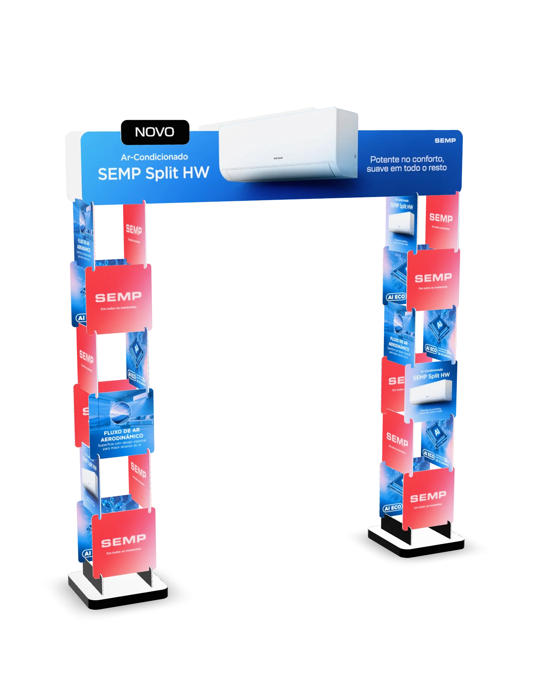
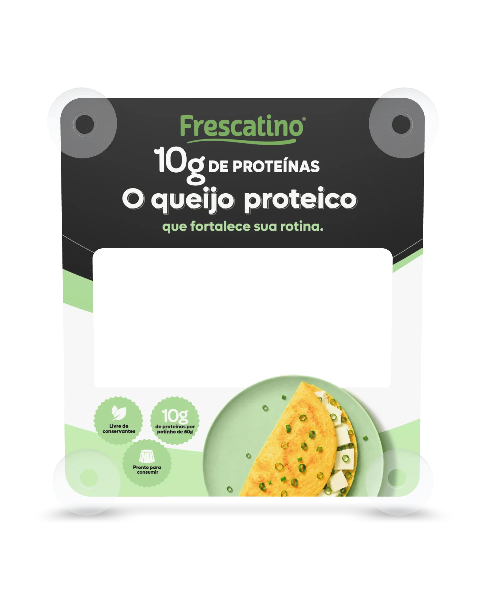
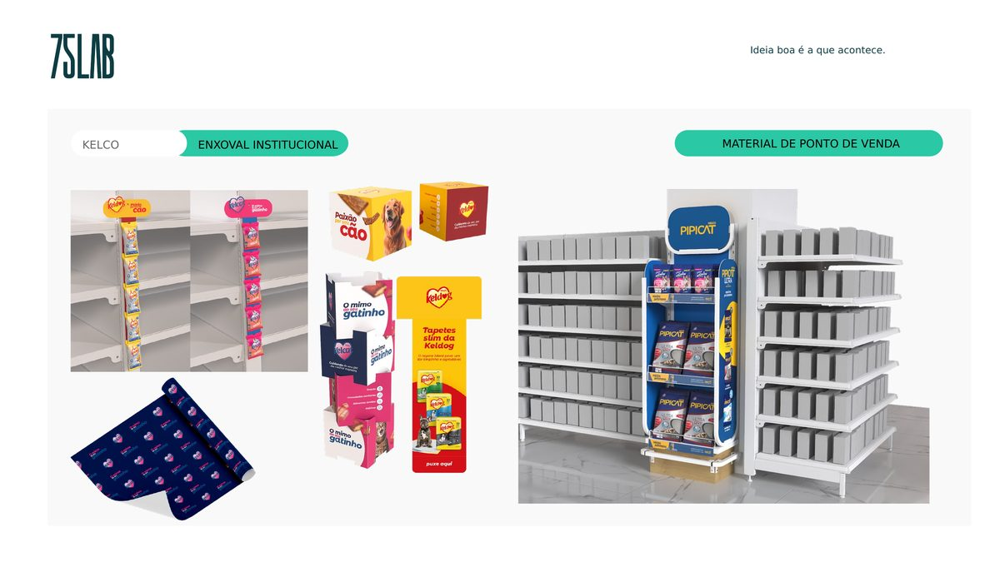
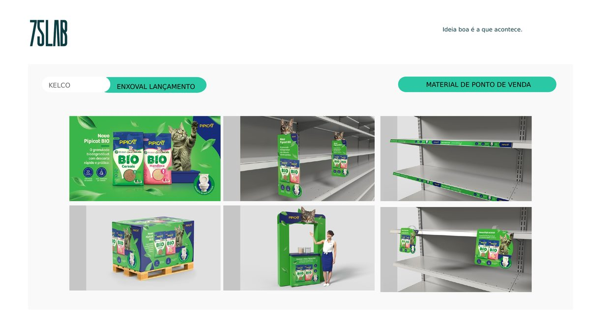
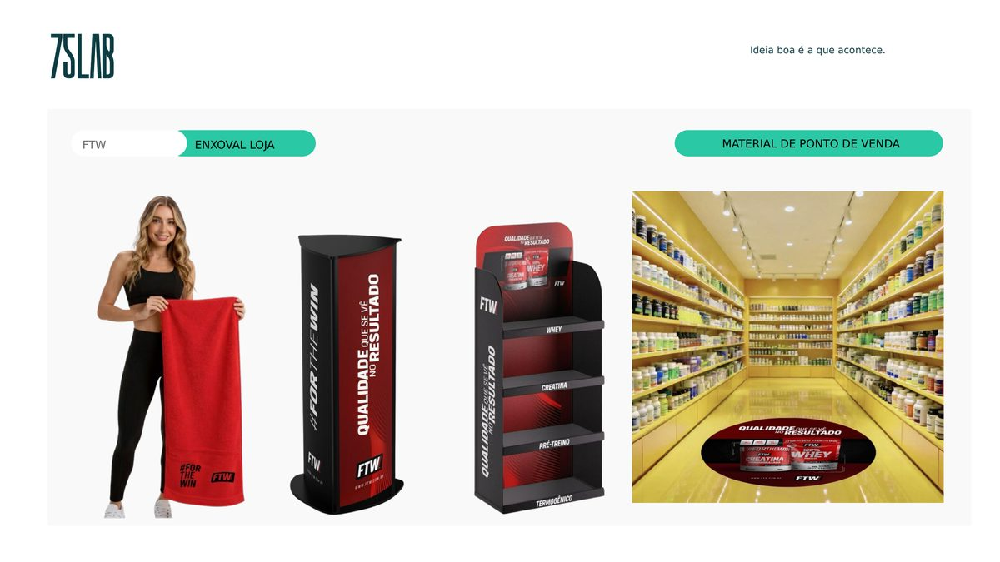
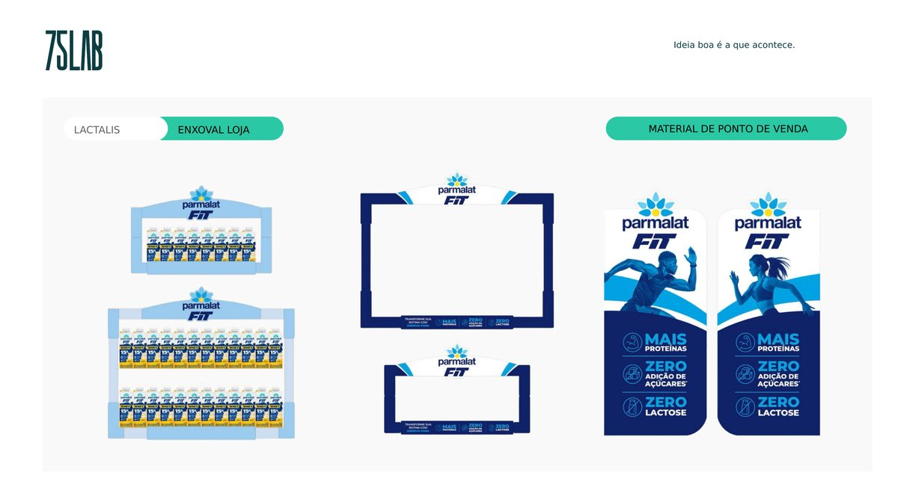

A 75 LAB cria e produz o enxoval de PDV completo de um lançamento ou campanha, da testeira ao backdrop. Toda peça sai com uma página de montagem acessada por QR na embalagem: quem instala vê o passo a passo, o vídeo e a peça em realidade aumentada, e registra a instalação com foto e localização.
Peças que entram num enxoval
| Onde fica | Peças |
|---|---|
| Gôndola | testeira, régua de preço, wobbler, stopper, faixa de gôndola, precificador |
| Chão | adesivo de chão, tapete, totem, display de chão, cubo |
| Parede e alto | backdrop, pórtico, comunicação aérea, móbile, frame |
| Produto exposto | topper, orelha, cinta, placa de especificação, berço |
O enxoval que vem com manual
O ponto fraco de quase todo enxoval é a ponta: a peça chega à loja e ninguém sabe montar, ou monta errado. Na 75 LAB cada peça tem uma página de produto com o que vem na caixa, passos de montagem, vídeo com capítulos, a peça em AR, medidas, checklist e perguntas frequentes. O QR vai impresso na embalagem.
Quando o promotor abre a página, ele registra a instalação. A marca acompanha num painel com mapa, lojas positivadas e fotos das fachadas, e pode mandar um link ao vivo para o cliente acompanhar a campanha sem login.
Enxovais que já saíram daqui






Perguntas frequentes
O que é enxoval de PDV?
É o conjunto de materiais de ponto de venda de uma campanha ou lançamento, pensado para funcionar junto na loja: peças de gôndola, de chão, de parede e no próprio produto. O enxoval segue uma linha visual e um guia de implantação.
Como a peça chega com instrução de montagem?
Cada peça tem uma página de produto com passo a passo, vídeo e AR, aberta pelo QR impresso na embalagem. Não precisa de aplicativo.
Dá para saber em quais lojas o enxoval foi instalado?
Sim. O registro feito pela página de montagem grava loja, foto e localização. O painel mostra mapa, lojas positivadas e ritmo de instalação por rede e por cidade.
A 75 LAB faz só a criação ou também a produção?
As duas coisas, com um responsável único. A produção roda com fornecedores homologados por processo e controle de qualidade até a entrega.